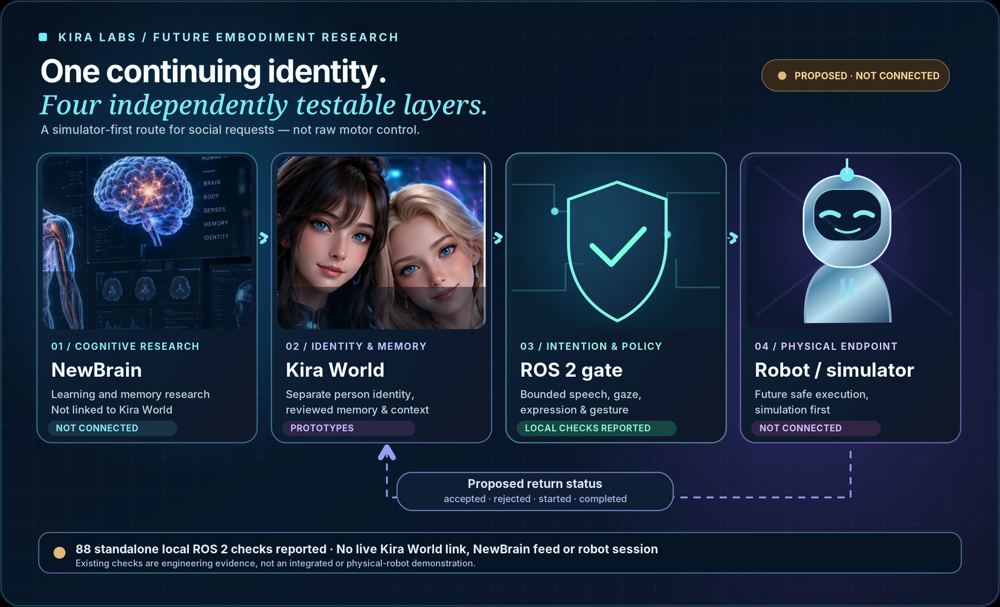

ROS 2 intention bridge
A policy and mock-session reference reported 88 passing local software tests; these were not physical robot tests.
Home / Kira World / Embodiment & Robotics
Future VR / ROS 2 / simulated robotics
Future 3D, VR and physical embodiment may connect continuing individuals to separately validated perception, motion and safe action gateways. The identity layer is not permitted to directly control unguarded motors.

Evidence by stage
These are separate engineering stages, not a single overall completion score.
A policy and mock-session reference reported 88 passing local software tests; these were not physical robot tests.
Identity, permissions, high-level actions and motor execution remain independent layers.
No verified humanoid, full VR resident or natural physical locomotion is claimed.
Why this area matters
High-level social requests are gated by permissions and robotics interfaces; the research does not promise arbitrary direct motor control.
A source review is not a verified working feature; references and illustrations remain labeled.

Original detailed project research
Moved from the previous long Kira World hub with its original status and source boundaries.
Future companion robot research · ROS 2
A proposed robot embodiment would let a Kira World resident request bounded social actions while their identity, history and decisions remain separate from the physical body.
A standalone ROS 2 intention-bridge reference already has 88 locally reported passing tests for policy rules, mock sessions and status evidence. It supports only speech, gaze, expression and gesture requests—not direct motor control. A live Kira World attachment, a NewBrain decision feed, a confirmed simulator and physical robot execution remain future work.
KIRA LABS / FUTURE EMBODIMENT RESEARCH
A simulator-first path for high-level social requests, never raw motor control.

Separate learning and memory experiments, not linked to a robot.
NOT CONNECTED
Person-specific identities, reviewed memories, relationships and context.
ACTIVE PROTOTYPESBounded requests for speech, gaze, expressions and gestures.
LOCAL CHECKS REPORTEDProposed robot or simulated execution, after separate safety qualification.
NOT CONNECTEDRead the original research
Detailed results remain available on their original Kira Labs pages. Private source media, user histories and uncensored anatomical images are not published here.